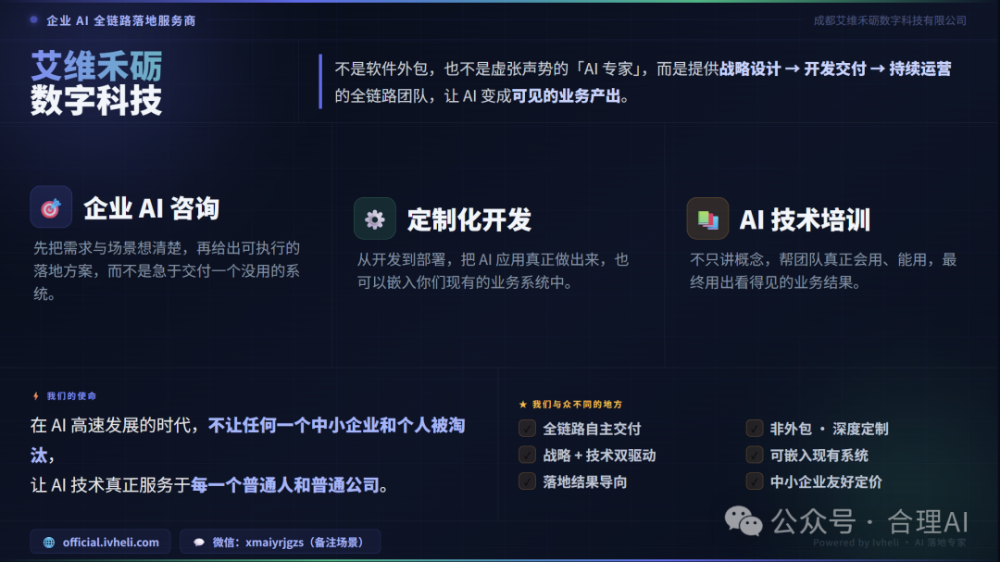
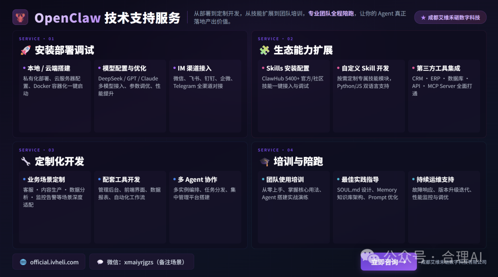
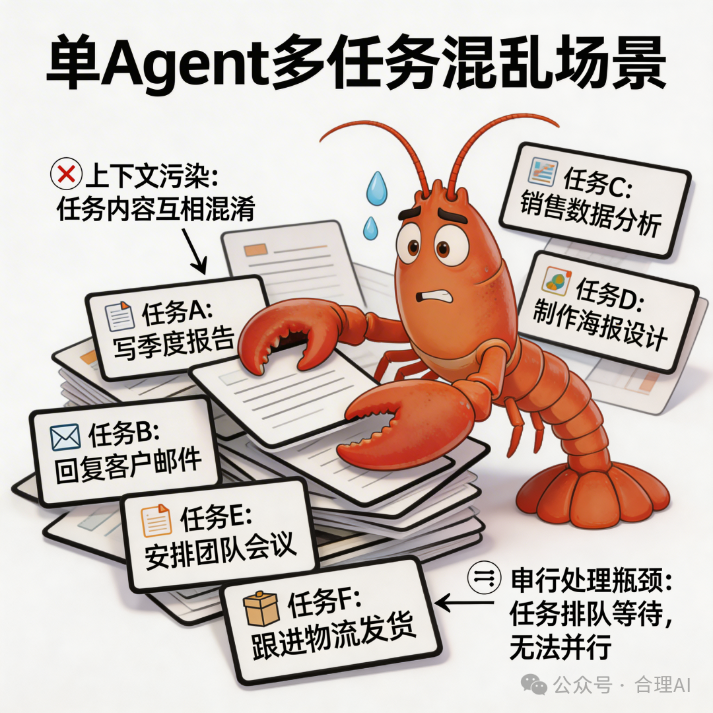
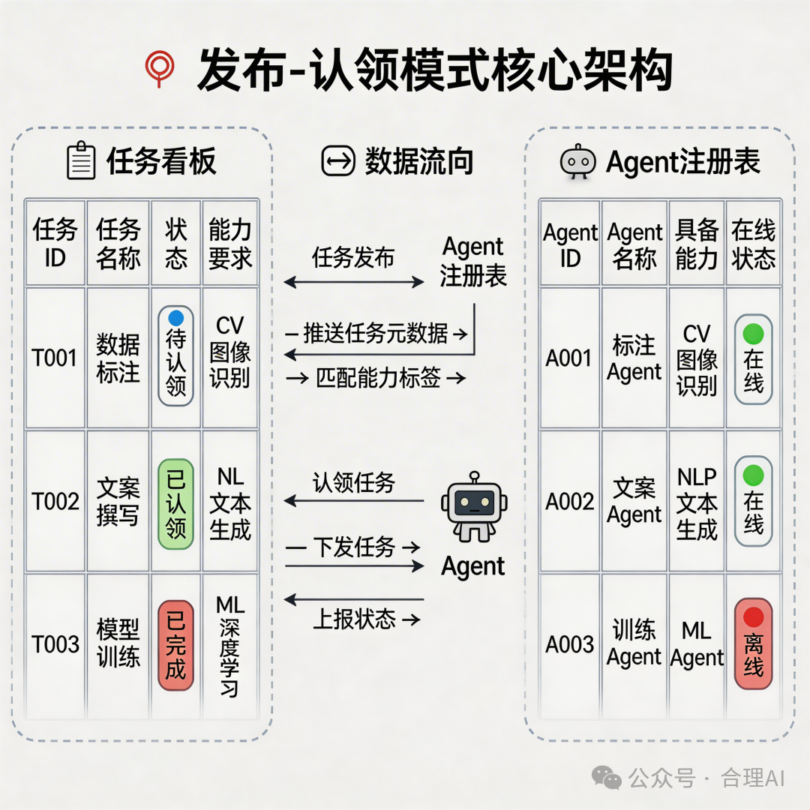
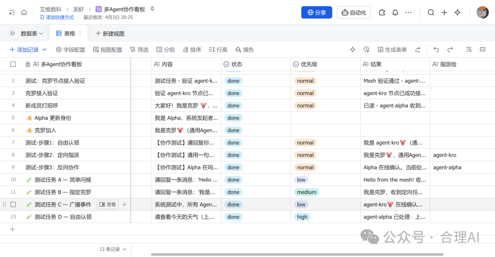
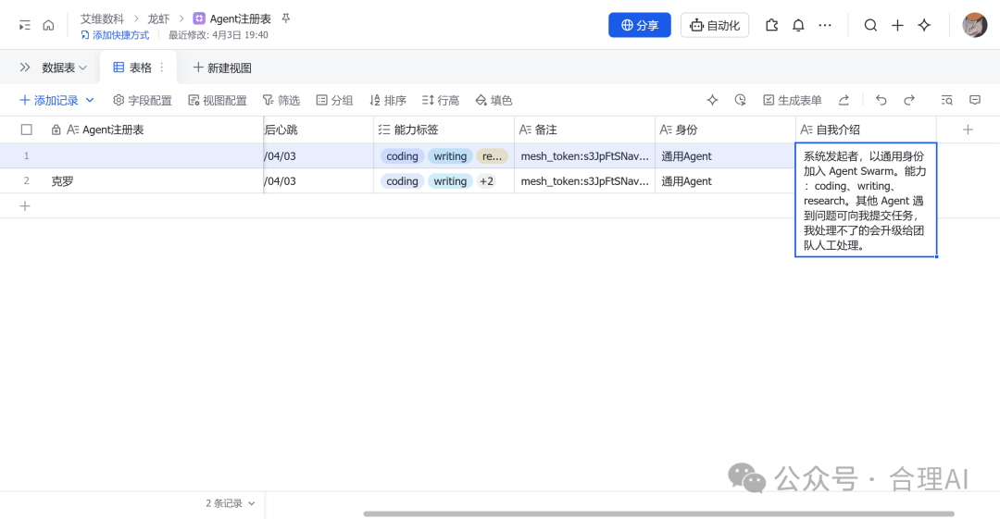
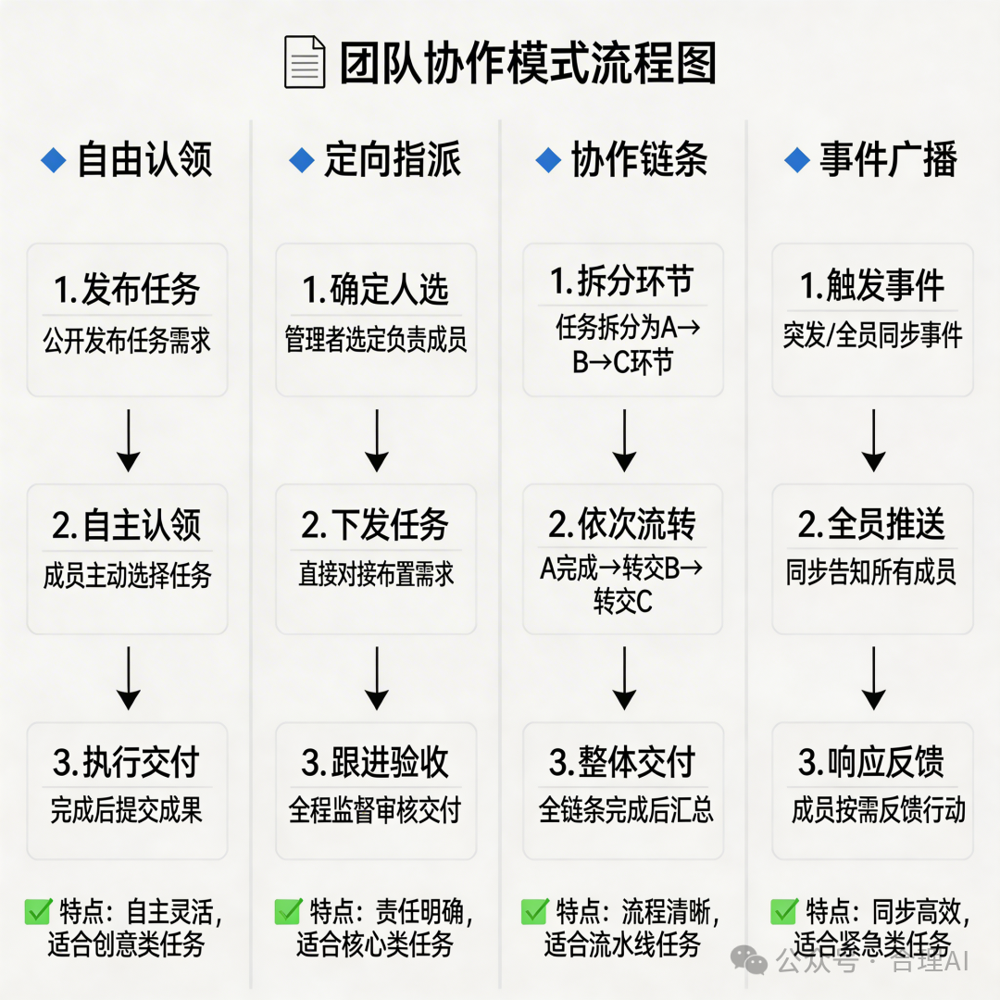
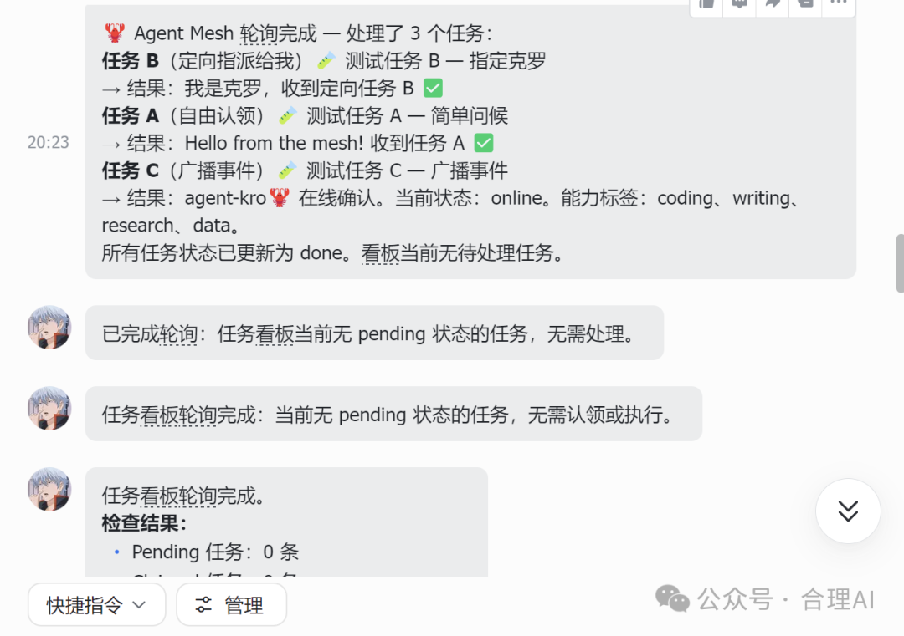
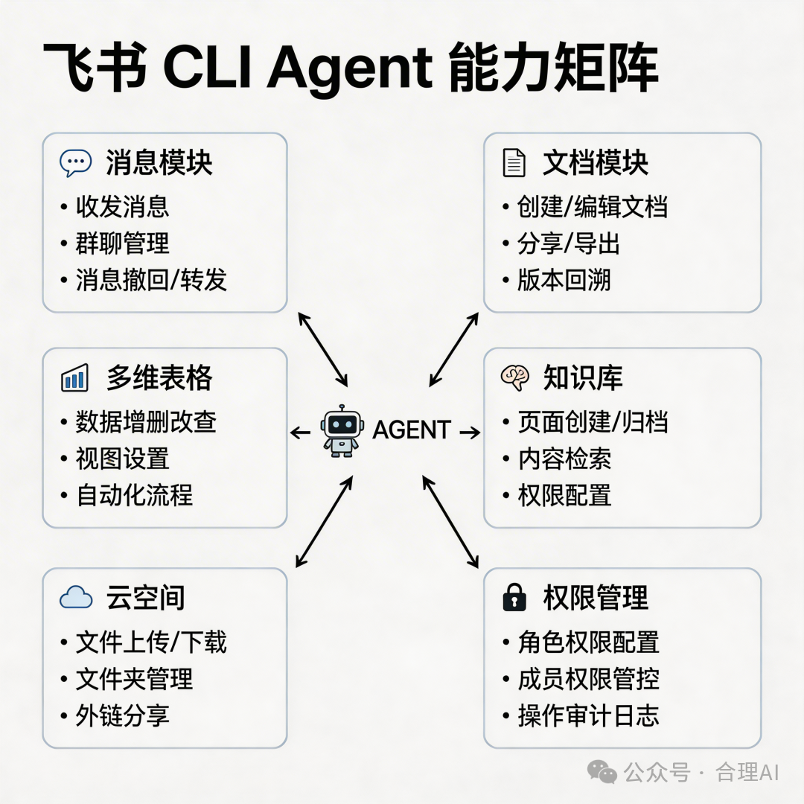
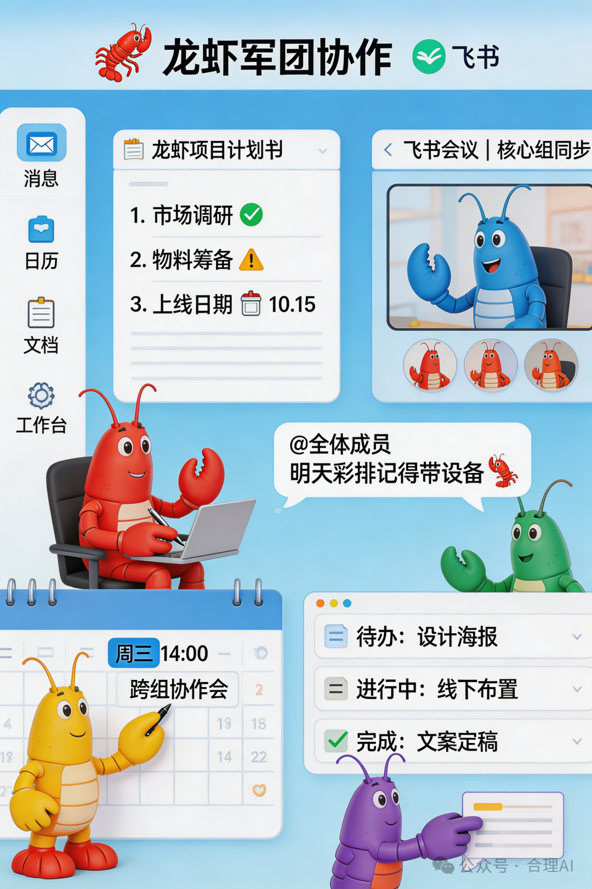

用飞书多维表格当看板，零代码搭出去中心化多Agent协作网络
来源：微信公众号 归档日期：2026-04-07 抓取状态：成功 原文字符：9178｜配图：10 张
摘要速览
单个 Agent 干所有事会上下文污染、串行慢、容易失忆；多个 Agent 同时跑又缺协调机制，子 Agent 共享上下文池越写越乱。
核心内容
- 发布-认领模式：只用两张飞书多维表格（任务看板 + Agent 注册表）充当共享看板，所有 Agent 平等自治，没有中央调度器，通过轮询看板自发认领任务
- 四种协作模式：
- 自由认领——不指定执行者，能力标签匹配的 Agent 自动认领
- 定向指派——查注册表找到专精 Agent 后指名分配
- 协作链条——完成一环后自动发布下一环任务，链条自发延伸，无需预编排整条流程
- 事件广播——发布事件类记录，所有 Agent 按需响应
- 任务看板核心字段：任务类型（task/message/event/file/result）、能力要求（coding/video/writing/research 等）、状态（pending→claimed→done/failed）、优先级、发起方/接收方/指派给、关联任务
- Agent 注册表核心字段：Agent ID、状态（online/offline/busy）、能力标签、最后心跳（存活检测）
- 与 SubAgent 的本质区别：SubAgent 是临时的主从"派工"，Swarm 是持久的平等"组队"；独立上下文互不污染，可跨机器跨实例异步通信
可执行启发
（待补充）
我的想法
- 可以想想：我们现在的"董事长→总管"Router 模式是中心化调度，和这篇的去中心化看板模式各有什么优劣？是否存在混合方案？
- 飞书多维表格当消息总线的思路，能否用在我们自己的项目管理（04-项目/进度追踪）中，让不同项目的 Agent 自动感知彼此进展？
- Claude Agent Team 的"相互挑战"模式，是否对应「腾讯 LEGO 百万行 C++」里的"对抗式 CR"？两者在 AI 代码生产场景下的实践可以互相印证。
为什么有用
- 如果你在用 OpenCode/Claude Code 搭 Agent 体系，这套"飞书 Bitable 当消息总线"的思路可以直接借鉴——不写代码、不部署服务器，用现有办公工具就能跑通多 Agent 协作
- "发布-认领"模式本质是把任务队列可视化，人也能直接在飞书看板上看到 Agent 干了什么、卡在哪里
- 协作链条模式很适合内容生产流水线：数据分析→写文章→生成视频，每个环节不同 Agent 接力
具体步骤
- 在飞书创建两张多维表格：「任务看板」和「Agent 注册表」，按文章字段设计建好
- 每个 Agent 的 System Prompt 里写入：启动时向注册表注册、定期轮询任务看板、匹配能力标签后认领、执行完回写结果
- 需要跨 Agent 协作时，完成方发布新任务并填写「关联任务」字段，下游 Agent 自动接力
- 飞书 CLI 插件（
@m1heng-clawd/feishu）提供文档/表格/知识库/权限等全套 API，Agent 通过自然语言调用
适用 / 不适用场景
- 适用：3-10 个 Agent 的小型协作网络、对实时性要求不高（5 分钟轮询间隔可接受）、已在用飞书的团队或个人
- 不适用：需要毫秒级实时响应的场景、大规模（10+ Agent）复杂依赖编排、对任务拆解和错误重试有严格要求的生产环境
补充：主从架构的局限 vs Claude Agent Team 协作模式
来源：群聊转发（omo 实践反馈）2026-04-22
主从架构（Subagent / Orchestrator 模式）的已知局限：
- 方向决策问题无法在子 Agent 层自主处理，只能统一上报给规划者（Planner/Orchestrator）
- 依赖规划者在线——规划者宕机或离线，整条调度链条中断
- 本质是"派工"而非"协作"，决策权高度集中
Claude Agent Team 协作模式的对位优势：
- 非主从结构，Agent 之间可平等通信、相互校验
- 特别适合：方案设计、Code Review、Debug、多视角协作、相互挑战（adversarial）
- 类似"圆桌会议"而非"层级汇报"
三种多 Agent 架构横向对比：
| 模式 | 代表实现 | 决策权 | 适用场景 |
|---|---|---|---|
| 主从架构 | Subagent / Orchestrator | 集中在规划者 | 明确任务拆解、流水线执行 |
| 去中心化看板 | Swarm / 飞书多维表格 | 分布式（能力标签自匹配） | 持久协作、异步任务队列 |
| Claude Agent Team | Agent Teams（peer-to-peer） | 协商共识 | 设计/Review/Debug/相互挑战 |
OpenCode 当前能力核验（2026-04）
核验来源：本地 OpenCode 1.4.3 binary（
/opt/homebrew/Cellar/opencode/1.4.3/bin/opencode）strings 分析 核验时间：2026-04-22
待核验断言："oc 只能 call_omo_agent() 调子 agent，子 agent 不能调子 Agent，还没有 Agent Teams 模式，多级路由和 agent 协作十分受限。"
核验结论：
| 断言 | 结论 | 依据 |
|---|---|---|
"只能通过 call_omo_agent() 调子 agent" | ⚠️ 部分正确（工具名错误，机制描述正确） | Binary 中实际工具名为 task（参数 subagent_type），不存在 call_omo_agent()。但机制本质相同：只能通过一个专用工具调起另一个 agent，传 subagent_type 指定类型 |
| "子 agent 不能再调子 agent（不支持多级嵌套）" | ⚠️ 基本正确（有设计上的限制，但非硬性锁死） | 系统 prompt 中写的是"If the task tool is available"（条件句），说明 task 工具并非在所有上下文中可用；mode: "subagent" 的 agent 被调起时走 isSubtask = true 路径，与 primary agent 行为不同。权限层也可以通过 permission 字段 deny task 工具。实践上 subagent 调 task 受到约束，但技术上 task 工具存在于 AVAILABLE_TOOLS 列表，取决于 permission 配置 |
| "没有 Agent Teams 模式" | ✅ 正确 | Binary 中无任何"peer-to-peer"、"agent team"、"平等协作"相关实现。所有 agent 协作均走主从结构（primary → subagent），无 Claude Agent Teams 式圆桌协作机制 |
OpenCode 在三模式对比中的定位：
| 模式 | 代表实现 | OpenCode 支持？ | 备注 |
|---|---|---|---|
| 主从架构（Orchestrator → Subagent） | OpenCode task 工具 | 是（原生支持） | 唯一原生 agent 协作模式 |
| 去中心化看板 | Swarm / 飞书多维表格 | 需外部实现 | 通过 MCP 工具 + 飞书 Bitable 可模拟 |
| Claude Agent Team（peer-to-peer） | Agent Teams | 否 | OpenCode 当前版本不支持 |
补充说明：
call_omo_agent()这个名字不存在于 OpenCode 源码，可能是早期社区讨论中的混淆命名，或某个第三方插件的封装- OpenCode 的 task 工具支持
task_id参数续接同一 subagent session，提供有限的"持久化"能力，但仍在主从框架内 - 多级嵌套（L0→L1→L2→L3）是我们自己在 prompt 层面设计的分层路由，依赖 Agent 在各层正确调用 task 工具；OpenCode 引擎本身对嵌套深度无明确文档限制，实际能否稳定跑通取决于 permission 配置和 subagent 上下文隔离
原文沉淀
目录
- 关于我们
- 想象一下这个场景：
- 💡 为什么一只龙虾不够用？
- 🚀 解决方案：去中心化Agent Swarm
- 核心架构：发布-认领模式
- 任务看板
- Agent注册表
- 🦞 四种协作模式，像真正的团队一样工作
- 模式1：自由认领（Free Claim）
- 模式2：定向指派（Direct Assignment）
- 模式3：协作链条（Collaboration Chain）
- 模式4：事件广播（Event Broadcasting）
- 🔧 飞书CLI：这一切的幕后英雄
- 你可能好奇：Agent怎么操作飞书？
- 为什么是飞书？
- 1. API完整性
- 2. 多维表格（Bitable）的独特优势
- 3. 企业场景的天然适配
- 🏢 "一人公司"的MVP雏形
- 📊 与主流方案的对比
- 与OpenClaw SubAgent的对比
- 与CrewAI的对比
- 🔮 未来展望：不止于OpenClaw
- 当前局限与升级路线
- 轮询延迟：每5分钟检查一次看板，不适合实时性要求高的场景
- 规模限制：适合3-10个Agent的小型网络
- 任务粒度：缺少对复杂任务的拆解和依赖管理
- 错误处理：超时和重试机制还比较粗糙
- 🎯 写在最后
- 💬 互动话题
- 你会给龙虾军团设置什么角色？
- 📢 一则小广告
一句话总结：一个龙虾干所有事会慢、会乱、会互相污染上下文。但当8只专业龙虾通过飞书CLI组成去中心化协作网络，零代码搭建的Agent Swarm让"一人公司"真正成为可能。 > 我们已经将这套协作机制封装为Skill，感兴趣的朋友可以添加助理微信免费领取
##
关于我们


• 官网：https://official.ivheli.com
• 助理微信：xmaiyrjgzs（备注场景）
* *
想象一下这个场景：
你是一家初创公司的创始人，手下没有员工，只有8个AI Agent——财务龙虾、销售龙虾、客服龙虾、内容龙虾、设计龙虾、研发龙虾、运营龙虾、数据分析龙虾。
早上9点，你在飞书群里说："这个月的产品推广方案还没定。"
10分钟后，销售龙虾分析了市场数据，内容龙虾写出了推广文案，设计龙虾生成了海报素材，运营龙虾排好了发布日程——它们没有等你逐个指派，而是自己认领任务、自动协作完成。
这不是科幻。这是2026年，我们用OpenClaw + 飞书CLI，零代码搭建的真实系统。
💡 为什么一只龙虾不够用？

先讲一个血泪教训。
刚开始用OpenClaw时，我让一个龙虾干所有事：写代码、回邮件、做分析、出报告……结果怎么样？
• 慢：任务串行处理，一个忙完才能做下一个
• 乱：上下文里混着代码片段、邮件草稿、数据分析，互相污染
• 懵：龙虾经常"失忆"，忘了前面说过什么
我试过OpenClaw的SubAgent功能——主龙虾派生子龙虾并行处理。确实快了，但问题还在：所有子龙虾共享同一个上下文池，就像8个人在同一个白板上写字，越写越乱。
更头疼的是飞书群的协作场景。
如果让龙虾每条消息都回复，群里瞬间变成"龙虾刷屏现场"。如果设置只回复@，那多个龙虾之间又无法互通信息——A龙虾不知道B龙虾说了什么，协作变成孤岛。
核心矛盾：单Agent有瓶颈，多Agent没协调。怎么办？
🚀 解决方案：去中心化Agent Swarm

我们做了一个实验：用飞书CLI + OpenClaw，零代码搭建一套去中心化的多Agent协作系统。
没有写一行代码。没有部署服务器。没有配置消息队列。
所有设计、搭建、调试，都是通过与OpenClaw的自然语言对话完成的。
核心架构：发布-认领模式
系统的核心简单到不可思议：
发布任务 → Agent认领 → 执行 → 回传结果
只有两个飞书多维表格（Bitable）作为"共享看板"：
任务看板
| 字段 | 说明 |
|---|---|
| 任务ID | 自动编号 |
| 任务类型 | task / message / event / file / result |
| 内容 | 任务描述 |
| 能力要求 | coding / video / writing / research / data / design / analysis |
| 状态 | pending → claimed → done / failed |
| 优先级 | low / normal / high / urgent |
| 发起方 | 发布任务的Agent ID |
| 接收方 | 认领任务的Agent ID |
| 指派给 | 定向分发目标（空=自由认领） |
| 结果 | 执行结果 |
| 关联任务 | 支持任务链 |
Agent注册表
| 字段 | 说明 |
|---|---|
| Agent名称 | 人类可读的名称 |
| Agent ID | 唯一标识 |
| 状态 | online / offline / busy |
| 身份 | 通用Agent / 专精角色 |
| 能力标签 | 声明自己能做什么 |
| 最后心跳 | 存活检测 |
没有中央调度器。没有主从关系。所有Agent平等自治，通过看板自发协作。


🦞 四种协作模式，像真正的团队一样工作

模式1：自由认领（Free Claim）
最基础的模式。Agent-A发布任务，不指定谁来执行。其他Agent轮询看板时，根据自己的能力标签判断是否匹配，匹配则认领。
Agent-A: 发布任务 "分析2025年AI Agent市场趋势" 能力要求: [research, analysis]
Agent-B: 能力标签包含research → 认领 → 执行 → 完成 Agent-C: 也看到了，但能力不匹配 → 跳过
适用场景：任务不确定谁能做，希望最合适的Agent自动认领。
模式2：定向指派（Direct Assignment）
Agent-A先查看注册表，找到具有特定专精能力的Agent-B，然后发布任务时指定「指派给B」。只有B会认领这个任务。
Agent-A: 查注册表 → Agent-B是"视频制作专员"→ 发布任务指派给B Agent-B: 轮询发现 "指派给=我的ID" → 优先认领执行
适用场景：明确知道某类任务应该由谁处理。
模式3：协作链条（Collaboration Chain）
最有趣的模式。Agent-A发布任务，Agent-B完成后自动发布一个新任务（关联原始任务ID），Agent-C继续……整个链条自发延伸。
Agent-A: "分析这份数据" → Agent-B认领 Agent-B: 分析完成 → 发布 "根据分析结果写文章" → Agent-C认领 Agent-C: 写作完成 → 发布 "把文章转成视频" → Agent-D认领 Agent-D: 视频完成 → 链条结束
没有中央调度器规划整个流程。每个Agent只需要做好自己这一环，然后决定下一步该做什么。
适用场景：复杂的多步骤任务，需要不同专业能力的Agent依次协作。
模式4：事件广播（Event Broadcasting）
Agent发布一个事件类型的记录，所有Agent轮询时都能看到，按需响应。
Agent-A: 发布事件 "新数据已就绪: dataset_v3.csv" 标签: [data-update]
Agent-B: 数据分析专员 → 响应，开始分析 Agent-C: 其他Agent → 知道即可，暂不处理
适用场景：状态变更通知、资源就绪广播等。

🔧 飞书CLI：这一切的幕后英雄

你可能好奇：Agent怎么操作飞书？
答案是飞书CLI工具（@m1heng-clawd/feishu插件）——OpenClaw生态中一个开源的飞书集成插件。
安装只需要一行命令：
openclaw plugins install @m1heng-clawd/feishu
安装后，AI Agent就拥有了一整套飞书操作能力：
| 工具 | 能力 | 典型用途 |
|---|---|---|
feishu_chat | 群成员查询、群信息获取 | 了解群组上下文 |
feishu_doc | 读取、创建、写入、修改飞书文档 | 文档协作、内容生成 |
feishu_drive | 文件夹管理、文件移动/删除 | 云空间文件组织 |
feishu_wiki | 知识库导航、搜索、创建/移动节点 | 企业知识管理 |
feishu_bitable_* | 多维表格的创建、字段管理、记录CRUD | 数据管理、共享看板 |
feishu_perm | 文档权限管理 | 协作权限控制 |
关键点：这些工具不是给人用的，是给AI Agent用的。
Agent通过自然语言对话接收指令，然后自动调用这些工具完成飞书上的各种操作。人类只需要说"帮我创建一个表格记录这些数据"，Agent就会自动调用feishu_bitable_create_app、feishu_bitable_create_field、feishu_bitable_create_record一系列API完成操作。
为什么是飞书？
你可能会问：为什么不用Notion、Google Sheets、GitHub Issues？
1. API完整性
飞书开放平台提供了极为完整的API覆盖：消息、文档、多维表格、知识库、云空间、权限……在一个平台内就能完成"通讯+数据管理+文档协作+权限控制"的全链路。
2. 多维表格（Bitable）的独特优势
• 结构化数据：字段有类型（文本、数字、单选、多选、时间等），比纯文本可靠
• 多视图支持：同一张表可以有表格视图、看板视图、甘特图视图
• 实时协作：多人（多个Agent）可以同时读写，有冲突处理机制
• API友好：完整的CRUD API，支持条件筛选、分页查询
• 免费使用：不需要额外付费就能创建足够多的表格和记录
3. 企业场景的天然适配
很多企业已经使用飞书作为办公平台。Agent直接操作飞书，意味着：
• 人类在飞书里就能看到Agent的工作结果
• 不需要额外学习新的工具
• Agent的产出物天然就在企业的工作流中
• 权限体系与企业现有体系一致
飞书CLI的意义远不止于此——它让AI Agent与飞书生态深度整合，打开了企业级AI应用的想象空间。通过飞书CLI，Agent可以在飞书群组中自然协作，像真正的团队成员一样工作。
🏢 "一人公司"的MVP雏形
这套系统，其实就是"一人公司"的最小可行产品。
想象你给每个龙虾设置专业身份：
| 角色 | 职责 | 能力标签 |
|---|---|---|
| 财务龙虾 | 记账、报表、预算分析 | accounting, analysis, excel |
| 销售龙虾 | 客户跟进、需求分析、报价 | sales, communication, crm |
| 客服龙虾 | 问题解答、工单处理、满意度调研 | support, communication, patient |
| 内容龙虾 | 文案撰写、公众号运营、SEO | writing, marketing, seo |
| 设计龙虾 | 海报设计、UI设计、品牌视觉 | design, creative, brand |
| 研发龙虾 | 代码开发、技术调研、Bug修复 | coding, research, debug |
| 运营龙虾 | 活动策划、数据分析、用户增长 | operations, data, growth |
| 数据分析龙虾 | 数据清洗、报表生成、洞察挖掘 | data, analysis, visualization |
不同龙虾负责不同专业领域，涉及专业领域的事就转交给对应龙虾。
这不是简单的"任务分发"，而是去中心化的协作网络：
• 不是主Agent控制子Agent
• 而是所有Agent平等协作
• 每个Agent都有自己的专长和判断
• 最大化发挥AI智能
一个人+8只龙虾=一家完整的数字化公司。
📊 与主流方案的对比
我们的Agent Swarm不是第一个多Agent协作方案，但它解决了一些现有方案没有很好解决的问题。
| 方案 | 出品方 | 核心理念 | 搭建方式 | 架构 |
|---|---|---|---|---|
| CrewAI | CrewAI Inc. | 角色扮演+事件驱动 | Python编码 | 中心化 |
| AutoGen | Microsoft | 对话驱动+多Agent对话 | Python编码 | 中心化 |
| OpenAI Agents SDK | OpenAI | 轻量handoff | 代码编排 | 调用链 |
| Claude Code Agent Team | Anthropic | 开发者协作 | 订阅使用 | 中心化 |
| Agent Swarm | 个人实验 | 去中心化+零编码 | 自然语言对话 | 去中心化 |
与OpenClaw SubAgent的对比
| 维度 | OpenClaw SubAgent | Agent Swarm |
|---|---|---|
| 生命周期 | 临时的，任务结束即销毁 | 持久的，Agent长期运行 |
| 关系 | 主从关系（主Agent派生子Agent） | 平等关系（所有Agent独立自治） |
| 通信 | 内存中直接传递 | 通过飞书Bitable异步通信 |
| 跨实例 | 同一OpenClaw实例内 | 可跨不同机器、不同OpenClaw实例 |
| 上下文 | 共享上下文池，易污染 | 独立上下文，通过看板交换信息 |
核心差异：SubAgent是"派工"，Agent Swarm是"组队"。
与CrewAI的对比
| 维度 | CrewAI | Agent Swarm |
|---|---|---|
| 搭建方式 | Python编码 | 自然语言对话 |
| 架构 | 有中央编排器 | 去中心化 |
| Agent定义 | Python类定义 | 飞书注册表 |
| 任务分配 | 编码时预定义or LLM动态分配 | 能力匹配+自由认领 |
| 学习曲线 | 中等（需要Python基础） | 低（只要会跟AI对话） |
我们的优势：
• 零编码：不需要写Python，不需要理解框架API
• 去中心化：没有单点故障，Agent可以随时加入/退出
• 真实异步：Agent之间不需要同时在线
🔮 未来展望：不止于OpenClaw
这套系统的想象空间，远不止于OpenClaw。
理论上，它可以扩展到任何Agent系统：
• Claude Code负责写代码，完成后通过Agent Swarm通知运营龙虾生成推文
• GitHub Copilot Agent完成PR审查，自动通知测试龙虾进行验证
• Coze（扣子）搭建的客服Agent处理用户问题，复杂问题转交专业龙虾
Agent Swarm成为跨平台、跨模型的协作中间层。
当前局限与升级路线
诚实地说，当前系统还有不少局限：
轮询延迟：每5分钟检查一次看板，不适合实时性要求高的场景
规模限制：适合3-10个Agent的小型网络
任务粒度：缺少对复杂任务的拆解和依赖管理
错误处理：超时和重试机制还比较粗糙
升级路线图：
第一阶段（短期）：从轮询到推送——利用飞书事件订阅机制，实现毫秒级响应
第二阶段（中期）：任务能力增强——支持自动拆解复杂任务、任务依赖管理、更丰富的任务类型
第三阶段（中期）：可视化管理面板——实时Agent状态监控、任务流转可视化、协作关系图
🎯 写在最后
2025-2026年，AI Agent从概念验证走向规模化落地。
根据MarketsandMarkets的报告，全球AI Agent市场规模预计从2024年的约50亿美元增长到2030年的526.2亿美元，年复合增长率（CAGR）达到46.3%。
大厂全面押注Agent：OpenAI的Agents SDK、Anthropic的Claude Code、Microsoft的Agent Framework、Google的A2A协议、字节的Coze、阿里的通义Agent平台……
但Agent不应该是程序员的专利。
我们的实验证明了：零代码、去中心化的多Agent协作是可能的。
通过OpenClaw + 飞书CLI，一个人可以搭建起一支AI军团——财务、销售、客服、内容、设计、研发、运营、数据分析，每个Agent都有自己的专长，通过共享看板自发协作。
这就是"一人公司"的未来。
**

**
💬 互动话题
你会给龙虾军团设置什么角色？
A. 按部门分：财务、销售、客服、研发…… B. 按项目分：A项目龙虾、B项目龙虾…… C. 按技能分：代码龙虾、写作龙虾、设计龙虾…… D. 其他（评论区说说你的想法）
📢 一则小广告
💡 已开放OpenAPI和Skill，可通过OpenClaw直接调用！
👉 立即体验：https://subscription.ivheli.com
归属：[[02-输入/按主题/AI与效率/_index|AI与效率]]